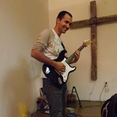
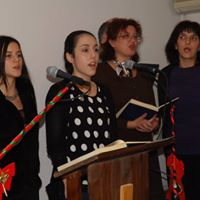
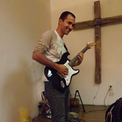
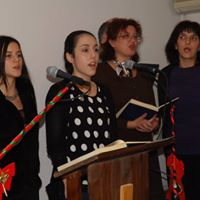

„Славење“
Се што постои е создадено од Бог. Сите инструменти и таленти,
се е создадено од Него и за
Него. Затоа славењето може и треба да се
користи на секој можен начин со секој можен инструмент за да се
слави Бог со песни. Дури и Бог има ангелски хор на небото, и труби
со кои ангелите свират на небото. Цар Давид го славел Бога со лира
и ги поттикнува сите да го слават и со китара и со тапанчиња.
Како што заљубениот маж пишува песни за љубената, и за љубовта,
така секој човек кој го запознава Бог секој ден се заљубува во Бог
и сака да го слави со песни.
Таков човек бил и Цар Давид, заљубен во Бог, и го славел Бога,
и му напишал многу песни кои ги наоѓаме во Псалмите.
Псалм 150
1 Слава на Бога! Фалете Го Бога во Неговото Светилиште,
Фалете Го во величеството на небесниот свод!
2 Фалете Го заради Неговите силни дела,
Фалете Го заради Неговата бескрајна величина!
3 Фалете Го со звуците на рогот,
Фалете Го со псалтир и лира,
4 Фалете Го со игра и тапанче,
Фалете Го со жичани инструменти и кавал,
5 Фалете Го со звучни кимвали,
Фалете Го со воскликнувачки кимвали!
6 Сè што дише - Нека Го фали Господа! Алилуја!


 


